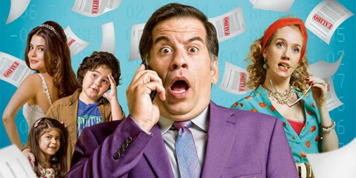

Aqui você encontra filme de qualidade! Abaixo estão listados 5 filmes de comédia que se destacam e podem
tornar seu dia melhor.
Gente Grande
A morte do treinador de basquete da infância de velhos amigos os reúne no mesmo lugar que celebraram um campeonato anos atrás. Os amigos, acompanhados de suas esposas e filhos, descobrem que idade não significa o mesmo que maturidade.
Minha Mãe é uma Peça
Dona Hermínia é uma mulher de meia idade, divorciada do marido, que a trocou por uma mais jovem. Hiperativa, ela não larga o pé de seus filhos Marcelina e Juliano, que já estão bem grandinhos. Um dia, após descobrir que eles a consideram uma chata, resolve sair de casa sem avisar ninguém, deixando todos, de alguma forma, preocupados com o que teria acontecido. Mal sabem eles que a mãe foi visitar a querida tia Zélia para desabafar suas tristezas do presente e recordar os bons tempos do passado.
Até que a sorte nos separe

Tino é um pai de família que tem sua rotina transformada ao ganhar na loteria. Em dez anos, o fanfarrão e sua mulher Jane gastam todo o dinheiro com uma vida de ostentação. Ao descobrir que está falido, ele é obrigado a aceitar a ajuda de Amauri, seu vizinho, um consultor financeiro nada divertido e extremamente econômico. Quando Jane engravida do terceiro filho, Tino faz de tudo para esconder da esposa que estão na lona, pois a recomendação médica é que a grávida evite fortes emoções.
Segurança de Shopping
Paul leva seu emprego de segurança de shopping muito a sério, embora a maioria de seus colegas não faça o mesmo. Quando o shopping é assaltado, o segurança precisa usar todas as suas habilidades para combater o crime.
As Férias de Mr Bean
Quando o clima úmido de Londres fica insuportável, Mr. Bean decide ir para a Riviera Francesa e divertir-se ao sol. Como sempre, seus planos não acontecem do jeito que queria. Ele é confundido duas vezes: com um sequestrador e com um renomado cineasta quando chega com o filho de um diretor e uma atriz principiante. Mr. Bean acaba no Festival de Cinema de Cannes.